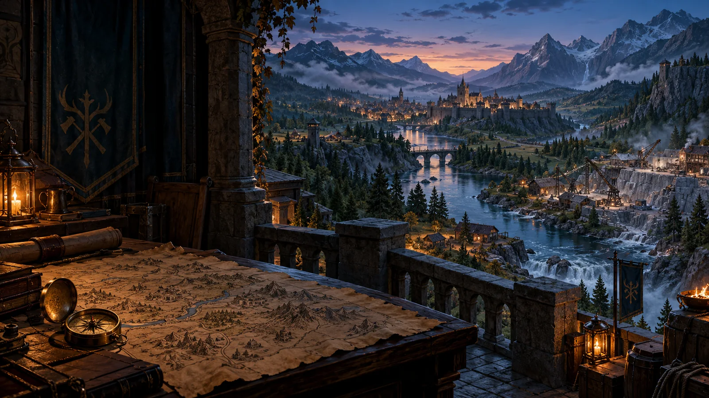
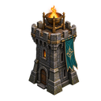
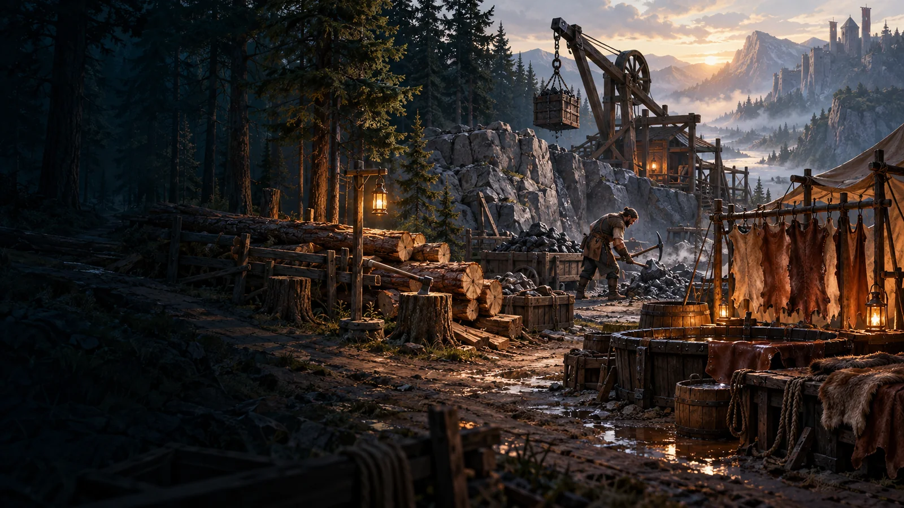
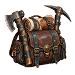
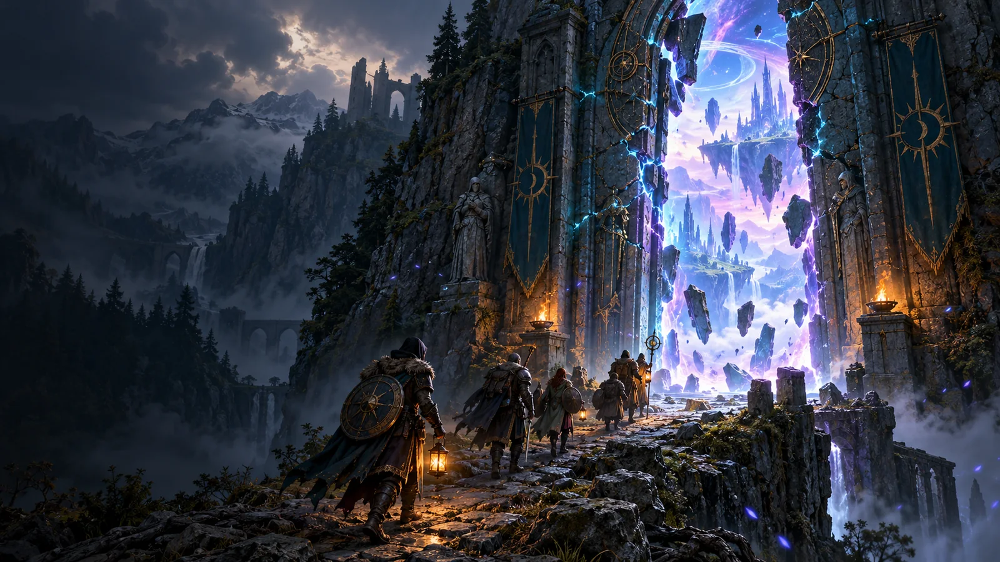
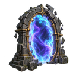
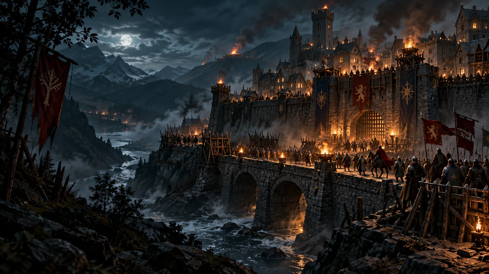
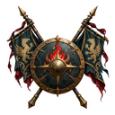
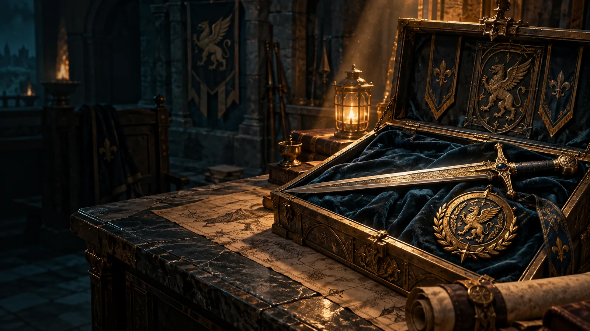
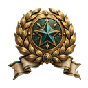

+4 após patrulhas
MUNDO EM MOVIMENTO
Fronteira de Ashen
Sua região natal define o contexto da campanha e suas próximas escolhas.
Abrir os cinco mocks completos →
REGIÃO NATAL · CAMPANHA LOCAL
Um vale que reage às suas decisões
O relógio da Vigília avança, contratos mudam e cada guilda deixa marcas na fronteira.
−3 após contrato
Participação da guilda
Histórico da guilda
CICLO REGIONAL · 6 HORAS
Vigília Regional


Em andamento
Os vigias mantêm as rotas abertas
As ofertas atuais ficam estáveis até o próximo ciclo. O resumo explicará o que mudou e por quê.
Última Vigília
Encerrada às 06:00 · resultados confirmados
- Segurança
- +4 patrulhas bem-sucedidas
- Ameaça
- −3 portal contido
- Influência
- +2 contribuição da guilda
MERCENÁRIOS OCUPADOS, ESCOLHAS REAIS
Atividades de coleta


Um trabalhador por atividade
Madeira, minério e couro têm fonte e rendimento próprios. O mercenário designado permanece ocupado.
Madeira · Bosque da Ponte
Lyra Ventoverde · próximo ciclo em 00:41
Minério · Pedreira Antiga
Bren da Muralha continua designado. A produção retorna quando houver espaço.
Couro · Trilhas do Oeste
Designe um mercenário livre antes de iniciar a atividade.
EVENTOS COM CONSEQUÊNCIAS
Portais e rebeliões


Portal ativoFenda nas Montanhas Veladas
Uma entrada por guilda. A oferta expira em 02:14; a equipe enviada ficará ocupada até o resultado.


Resposta pendenteChamado da Ponte de Cinzas
A região pede ajuda. Aceitar abre uma hora de prioridade para organizar a companhia; recusar delega à CPU.
MARCOS DA CAMPANHA
Conquistas e recompensas


Pronta para resgateAlém do Véu
Conclua cinco portais dimensionais. A recompensa é registrada uma vez no save.
Três Fontes
Complete ciclos de coleta em madeira, minério e couro.
Progresso auditável por família
Companhia Completa
O marco permanece no histórico após o resgate.
Recompensa entregue uma vezGuilda sem Fronteiras
Contribua em rebeliões de três regiões distintas.
Recompensa: armadura Lendária única